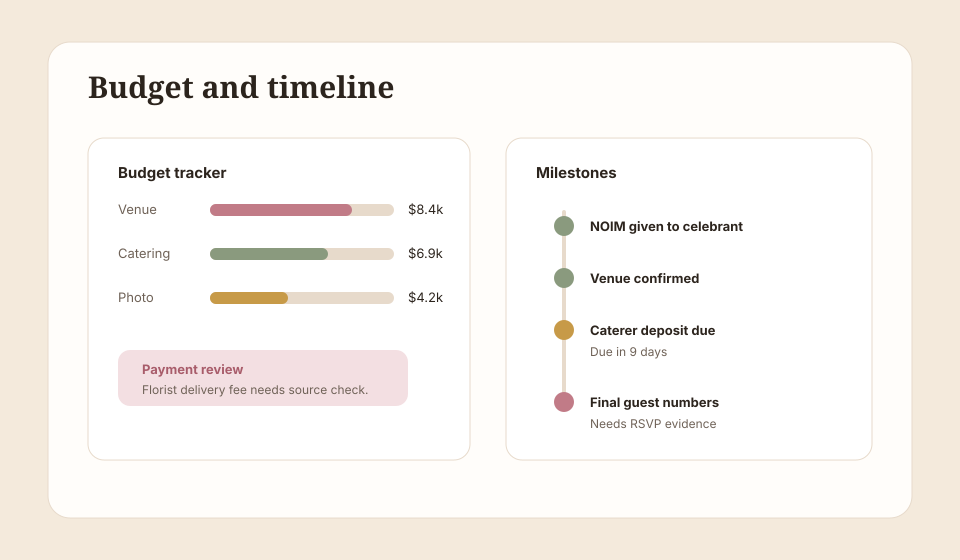
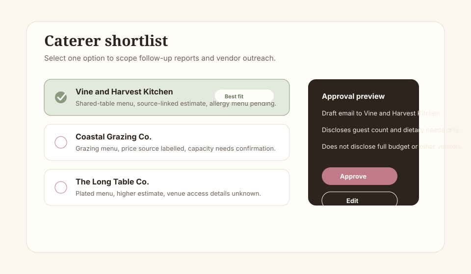

Overview
Use this for the current state of the wedding: priorities, assumptions, open blockers, selected decisions and what OmnyID thinks needs attention next.
User guide
Use this guide as a practical walkthrough for each part of the workspace: intake, budget, vendors, guests, timeline, legal reminders, approvals, exports and day-of coordination.

Give OmnyID your approximate date or season, location, guest count, budget comfort and top priorities. Add cultural, accessibility, dietary or family constraints only when they matter to your decisions.
Check the summary, assumptions, budget snapshot, timeline, vendor ideas, tasks and draft files. Treat anything marked as source-unverified as a prompt to verify before relying on it.
Use the save or planning-files actions to turn useful drafts into workspace files, tasks, calendar reminders and decision records.
Ask follow-up questions from the workspace so OmnyID carries the same wedding plan ID, selected vendors, deadlines, budget assumptions and files into the next response.
Use this for the current state of the wedding: priorities, assumptions, open blockers, selected decisions and what OmnyID thinks needs attention next.
Open generated research notes, comparison tables, email drafts, budget sheets, legal setup notes, run sheets and guest documents.
Save next actions such as quote checks, deposit reviews, RSVP follow-ups, seating updates, vow preparation and vendor response deadlines.
Inspect how budget, venue, vendors, legal deadlines, guests, transport and weather plans depend on each other before you commit.


Use vendor tables to compare fit, location, capacity, price basis, source status and missing evidence. Select one row when you want future reports to focus on that option.
Email, sharing, booking, calendar and registry actions stay approval-gated. OmnyID can stage drafts and receipts; real external delivery depends on connected providers.
Save venue tours, deposit dates, RSVP deadlines, final-number deadlines, rehearsal times and day-of milestones as first-class calendar or task items. For Australian weddings, use the legal setup section to track NOIM timing, celebrant coordination and official-source checks without treating OmnyID as a legal lodgement service.
Use Markdown, printable HTML, Word-openable documents and CSV table exports for planning packets, budget sheets and vendor comparisons.
Keep guest identities, family notes, budget ceilings and unrelated vendor comparisons out of vendor-facing packets unless you explicitly include them.
Start with the essentials and keep refining from the same remembered workspace.